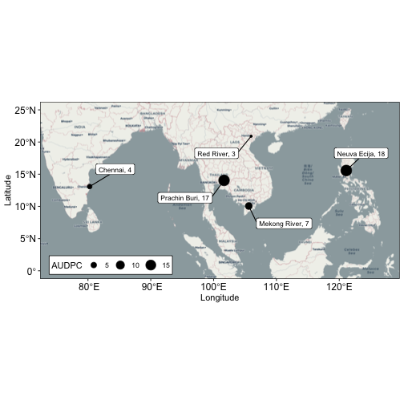

You may wish to compare the effects of different establishment dates, different seasons or different locations on disease levels. This vignette details how you can automate several runs of {epicrop} in R and visualise them on maps.
Map of AUDPC at Multiple Locations
In this example we will fetch data for the Mekong River Delta and Red River Delta in Vietnam; Prachin Buri, Thailand; Chennai, India and Nueva Ecija, in the Philippines for the wet season (second half of the year) in 2000. The map will show a point, with the size relative to the AUDPC value for that location using the latitude and longitude values that were supplied to fetch the weather data.
The {ggspatial} package is used to provide a base layer of countries using Open Street Map map baselayer data and labelling capabilities.
library(epicrop)
library(ggplot2)
library(ggspatial)
locations <- list(
"Mekong River" = c(105.5943, 10.0634),
"Red River" = c(105.9700, 20.9034),
"Prachin Buri" = c(101.6601, 14.0421),
"Chennai" = c(80.2707, 13.0827),
"Neuva Ecija" = c(121.1113, 15.5784)
)
year <- 2000
emergence_date <- "06-30"
ymd <- build_epicrop_emergence(years = year, month_day = emergence_date)
wth_list <- fetch_epicrop_weather_list(
lonlat = locations,
start_date = "2000-06-30",
duration = 120L,
years = year,
mode = "cross"
)
bb_sim <- run_epicrop_model(
model_fun = bacterial_blight,
emergence_dates = ymd,
wth_list = wth_list,
window_days = 120L,
output = "full"
)
ggplot(bb_sim, aes(x = lon, y = lat)) +
annotation_map_tile(type = "osm", zoomin = 0) +
geom_spatial_point(aes(size = AUDPC)) +
geom_spatial_label_repel(
aes(label = paste(location, round(AUDPC, 0), sep = ", ")),
box.padding = 1,
size = 3
) +
theme(
legend.position = "inside",
legend.position.inside = c(0.025, 0.025),
legend.justification = c("left", "bottom"),
legend.box.just = "right",
legend.margin = margin(3, 3, 3, 3),
legend.direction = "horizontal",
legend.spacing.y = unit(0, "mm"),
panel.border = element_rect(colour = "black", fill = NA),
axis.text = element_text(colour = 1, size = 12),
legend.background = element_blank(),
legend.key = element_blank(),
legend.box.background = element_rect(colour = "black")
) +
labs(
x = "Longitude",
y = "Latitude"
) +
ylim(c(0, 25)) +
xlim(c(75, 127)) +
coord_sf(crs = 4326)